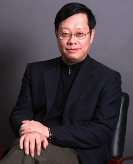

<td align="center" class="tbcolor10" colspan="2" valign="top">
<table border="0" cellpadding="0" height="100%" width="100%">
<tbody><tr><td align="right" height="35px" style="font-size:9pt">
<a href="javascript:window.close()" title="关闭本窗口">关闭窗口</a>｜<a href="print.asp?id=541328" target="_blank" title="打印本页内容">打印张贴版</a>    

</td></tr>
<tr>
<td align="center" height="500" valign="top">
<table border="0" cellpadding="4" cellspacing="0" height="100%" style="border-collapse: collapse;word-break:break-all;" width="86%">
<tbody><tr>
<td align="center" height="80px"><span style="font-family:方正小标宋简体;font-size: 25px;color: #C70E5C"><b><font color="black">讲座预告 | 北京师范大学教授方晓义学术讲座</font></b></span></td>
</tr>
<tr>
<td align="center" height="50px" style="font-size: 9pt"><font color="#808080">心理学院　2025/2/19 16:21:00</font><br/> 
<font color="#F8F8F8" style="font-size:9pt">（钟沛基 2022280095）</font></td>
</tr>
<tr>
<td height="300" valign="top">
<p class="MsoNormal" style="text-align: center;"></p><p class="MsoNormal"><b>讲座名称：</b>夫妻互动行为与智能化分析<span lang="EN-US"><o:p></o:p></span></p>
<p class="MsoNormal"><b>讲座时间：</b><span lang="EN-US">2025</span>年<span lang="EN-US">2</span>月<span lang="EN-US">22</span>日周六下午<span lang="EN-US">16</span>：<span lang="EN-US">00<o:p></o:p></span></p>
<p class="MsoNormal"><b>讲座地点：</b>深圳大学沧海校区致理楼<span lang="EN-US">L3-1201<o:p></o:p></span></p>
<p class="MsoNormal"><b>主讲人：</b>方晓义教授<span lang="EN-US"><o:p></o:p></span></p><p class="MsoNormal"><b>主讲人简介：<span lang="EN-US"><o:p></o:p></span></b></p>
<p class="MsoNormal">方晓义，男，博士，北京师范大学教授，博士生导师，<span lang="EN-US">2009</span>年度教育部知名学者特聘教授，现任北京师范大学心理学部临床心理学院副院长、婚姻家庭研究与咨询中心主任、高中生发展指导研究中心主任。主要研究方向为婚姻家庭研究与治疗、中小学生心理健康与青少年网络成瘾。同时，兼任教育部社会科学委员会教育学和心理学学部秘书长，教育部高等学校心理健康专家指导委员会委员；中国心理学会副理事长、中国心理学会婚姻家庭心理与咨询专业委员会主任委员，中国教育学会理事、中国教育学会学校教学心理学分会理事长，中国认知科学学会社会认知科学分会副会长等职。任核心期刊《心理发展与教育》副主编、《应用心理学》副主编，《心理与行为研究》和《中国临床心理学杂志》等编委。
<span lang="EN-US"><o:p></o:p></span></p>
<p class="MsoNormal">主持教育部哲学社会科学研究重大课题攻关项目、国家自然科学基金项目、科技部工作基础专项、北京市等<span lang="EN-US">24</span>个纵向科研项目；联合主持美国<span lang="EN-US">NIH</span>（<span lang="EN-US">National
Institute of Health</span>）<span lang="EN-US">6</span>个国际合作项目，主持<span lang="EN-US">50</span>余项国内横向合作项目；出版专著、译著<span lang="EN-US">20</span>余部，在国际学术期刊上发表研究报告<span lang="EN-US">160</span>余篇，在国内学术期刊上发表研究报告<span lang="EN-US">240</span>余篇；向中央办公厅和教育部有关部门提交了<span lang="EN-US">5</span>篇政策咨询报告，获国家有关领导人和教育部司局级的批示和采纳。获教育部第四届全国教育科学研究优秀成果一等奖，教育部第四届中国高校人文社会科学研究优秀成果奖二等奖，教育部第七届中国高校人文社会科学研究优秀成果奖三等奖，北京市第七届高等教育教学成果一等奖，北京市第七届哲学社会科学优秀成果二等奖，入选<span lang="EN-US">2005</span>年教育部新世纪优秀人才支持计划。多次受中组部、教育部、上海市组织部邀请为国家机关、教育部和上海市司局级干部做有关婚姻家庭的报告和讲座。</p><p class="MsoNormal"><br/></p><p class="MsoNormal">欢迎感兴趣的师生参加！</p><p class="MsoNormal" style="text-align: right;">深圳大心理学院</p><br/></td>
</tr>
<tr><td height="0" style="font-size: 9pt"></td></tr>
<tr><td align="right" style="font-size: 9pt">撰稿：俎亚男　审核：张丽  <br/> </td></tr>
</tbody></table>
</td>
</tr>
</tbody></table>
</td>
